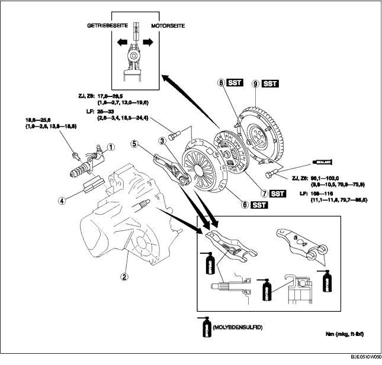

1. Gemäß der Reihenfolge in der Tabelle ausbauen.
2. Der Einbau erfolgt in umgekehrter Reihenfolge.

.
|
1
|
Kupplungsnehmerzylinder
|
|
2
|
Schaltgetriebe
|
|
3
|
Kupplungsausrücklager
(Siehe AUSRÜCKLAGER PRÜFEN.)
|
|
4
|
Manschette
|
|
5
|
Kupplungsausrückgabel
|
|
6
|
Kupplungsdruckplatte
|
|
7
|
Kupplungsscheibe
(Siehe Einbauhinweis für Kupplungsscheibe.)
|
|
8
|
Führungslager
(Siehe Ausbauhinweis für Führungslager.)
(Siehe Einbauhinweis für Führungslager.)
|
|
9
|
Schwungrad
(Siehe Ausbauhinweis für Schwungrad.)
(Siehe Einbauhinweis für Schwungrad.)
|
1. Vor dem Ausbau der Ausrückgabel die Gabelstütze entfernen.
1. Die SSTs ansetzen.
2. Alle Schrauben über Kreuz um jeweils eine Umdrehung lösen, bis die Feder nicht mehr gespannt ist.
3. Die Kupplungsdruckplatte und die Kupplungsscheibe abnehmen.
1. Das Führungslager mit dem SST ausbauen.
1. Das Führungslager mit den SSTs einbauen.
ZJ, Z6
VL
1. Das Schwungrad mit dem SST blockieren.
2. Die Schrauben in mehreren Arbeitsgängen über Kreuz gleichmäßig lösen.
3. Das Schwungrad ausbauen.
4. Auf Öllecks vom hinteren Wellendichtring der Kurbelwelle prüfen.
1. Das Schwungrad auf die Kurbelwelle setzen.
2. Bei erneuter Verwendung der Schrauben, die Gewindegänge und das Loch reinigen, dann Locktite auf die Gewindegänge auftragen.
3. Die Sicherungsschrauben des Schwungrads von Hand anziehen.
4. Das SST am Schwungrad ansetzen.
5. Die Schrauben in mehreren Arbeitsgängen über Kreuz gleichmäßig festziehen.
1. Die Kupplungsscheibe mit dem SST zentrieren.
1. Die SSTs ansetzen.
2. Die Schrauben in mehreren Arbeitsgängen über Kreuz gleichmäßig festziehen.